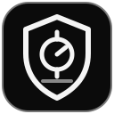

Authenticator 2FA
Autenticação em dois fatores
Crie seu cofre
Defina uma senha principal para proteger as chaves das suas contas neste navegador.
Se esquecer a senha principal, não será possível recuperar as chaves. Faça backups criptografados e guarde a senha em local seguro.
Cofre bloqueado
Digite sua senha principal para acessar seus códigos.
O atraso progressivo após falhas dificulta tentativas repetidas, mas não substitui uma senha forte.
Suas contas
0 contas cadastradas
Códigos ativos
Nenhuma conta cadastrada ainda.
Nenhuma conta corresponde à pesquisa.
Os dados são descriptografados somente enquanto o cofre está desbloqueado nesta janela. O bloqueio automático ocorre após 2 minutos sem atividade.
Verificando situação do backup...
O backup contém os segredos das contas em formato criptografado. A senha do backup deve ser forte e diferente da senha do cofre.
Categorias personalizadas
Crie, edite ou remova categorias próprias. Separe os nomes por vírgula.
Bloqueio automático
Escolha por quanto tempo o cofre pode permanecer desbloqueado sem atividade.
Visualização
Personalize a densidade e a quantidade de colunas no painel amplo.
Atividade recente
Registra apenas ações e horários. Nomes de contas, códigos e segredos não são incluídos.
- Nenhuma atividade registrada.
Escanear QR Code
Posicione o QR Code de configuração dentro da área de leitura. A imagem é processada localmente e não é enviada a nenhum servidor.
Aguardando permissão da câmera...
QR Code da conta
Este QR Code contém o segredo TOTP. Qualquer pessoa que o ler poderá gerar códigos para esta conta. Não compartilhe.
Confirmar ação
Esta ação não poderá ser desfeita.